Данте
Сын демона Спарды. Данте — никто иной, как охотник на демонов он гоняется за теми, кто убил его мать и поработил брата.

Триш
Загадочная женщина, сильно напоминающая мать Данте, Еву.

Вергилий
Вергилий был готов сделать всё возможное ради получения силы Спарды.

Мундус
"И снова я должен лицезреть Спарду… Странная судьба, не так ли?"

Могущественный демон-мечник, известен как «Легендарный Темный Рыцарь». Две тысячи лет назад в нем «проснулась справедливость» и он в одиночку одолел Мундуса и его легионы.
Спарда
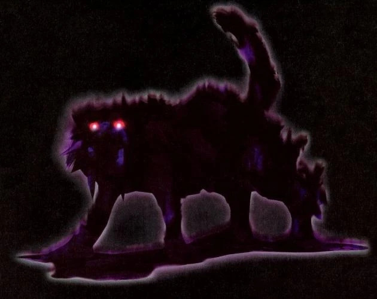
Тень
О враге
Это опасный мини-босс и элитный противник, внешне напоминающий теневого саблезубого тигра. Пока Тень покрыта защитной оболочкой, физические удары мечом наносят ей ноль урона и могут ранить самого Данте. Если сильно истощить ядро, Тень становится ярко-красной. Она перестает получать урон, становится агрессивной и пытается наброситься на Данте, чтобы взорваться вместе с ним. В режиме демона (Devil Trigger) захват не работает, что спасает от урона.
Механика сражения
Победа над Тенью в Devil May Cry 1 требует снятия её теневой брони с помощью стрельбы и последующего нанесения урона обнаженному ядру в ближнем бою. Обычные физические атаки по теневому облику бесполезны и нанесут урон самому Данте. Предпочтительное оружие — Ebony & Ivory (даются Данте автоматически с самого начала игры), стрелять из них стоит в прыжке. Превращение в демона (Devil Trigger) ускоряет процесс обнажения ядра. Когда появится светящееся ядро, используйте сильный удар мечом (например, Stinger с включенным Devil Trigger). Когда Тень краснеет и готовится взорваться, она становится крайне агрессивной и пытается схватить Данте. В режиме Devil Trigger Данте неуязвим к этому захвату — нужно уворачиваться, пока враг не погибнет.
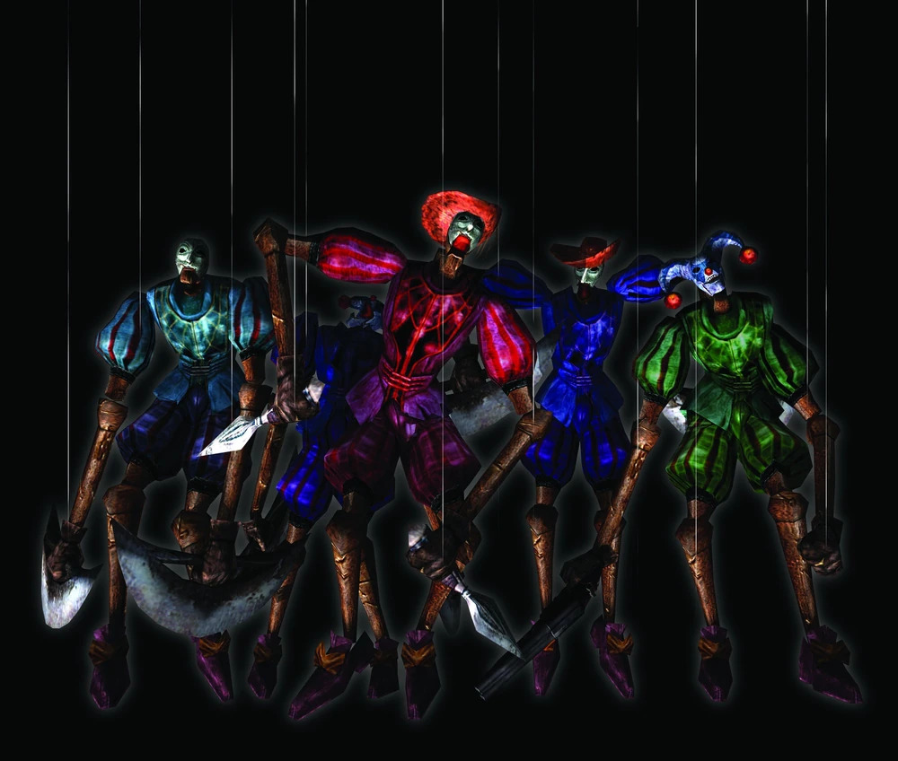
Марионетка
О враге
самый распространенный враг в Devil May Cry. Марионетки когда-то были марионетками, созданными для того, чтобы быть инструментом удовольствий и наслаждений, но теперь демоны вселились в них, и теперь их контролирует Мундус.
Механика сражения
Атаки марионеток различаются в зависимости от того, с кем из них вы столкнетесь. Что касается их движений, марионеток не следует недооценивать их из-за чрезмерной медлительности и отсутствия каких либо действий. Если битва затянется, то разъяренные марионетки начнут свирепствовать и совершать более агрессивные атаки.
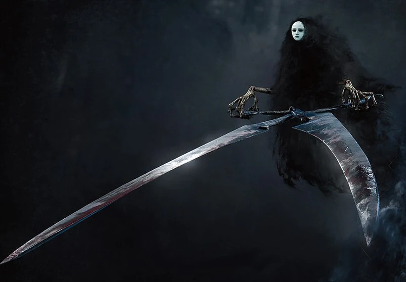
Ножницы и косы греха
О враге
Это злые духи, которые не имеют реального физического тела. Они существуют, только принимая форму черных плащей (напоминающих Мрачного Жнеца) и используя смертоносное оружие — большие ножницы (Sin Scissors) или косы (Sin Scythe).
Механика сражения
Самый эффективный способ победить Sin Scissors или Sin Scythe — нанести точный критический удар по их маске (например, выстрелом из пистолета или сильной атакой наотмашь). Если разбить маску с одного удара, демон сразу рассыпается. В зависимости от цвета маски (или состояния) они могут вести себя по-разному: от осторожного кружения вокруг игрока до яростных внезапных выпадов. Когда они кружат вокруг персонажа, уклонение и своевременный ответный удар по уязвимой зоне — ключ к победе.
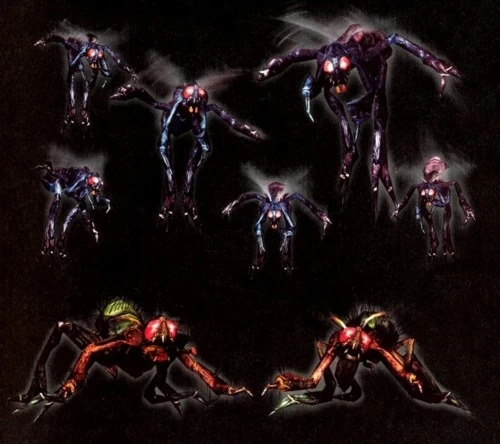
Вельзевул
О враге
вид демонов, представляющие собой злых духов вселившихся в мух. Демоны разделены на два подвида, которые между собой отличаются окрасом, размерами и физическими показателями. Благодаря своей физиологии и уникальным особенностям организма, способны выполнять ряд уникальных приемов.
Механика сражения
Как только вы убили одну муху, следите за зелеными особями. Если зеленая муха подползает к трупу, немедленно атакуйте ее (лучше всего приемом Stinger меча Alastor или Force Edge), чтобы не дать ей отхилиться.
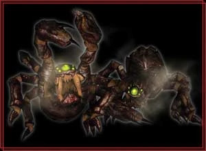
Киклоп
О враге
каменные паукообразные демоны появляющиеся на острове Малет. Внешне представляют собой более слабую версию Фантома, с неравномерно большим глазом на голове, который окружен двумя парами глаз меньшего размера.
Механика сражения
Вам нужно маневрировать так, чтобы один Киклоп находился строго между Данте и вторым Киклопом. Когда дальний противник начнет плеваться камнями, его снаряды поразят и убьют его собственного сородича, за что вы получите осколок Синей Сферы.
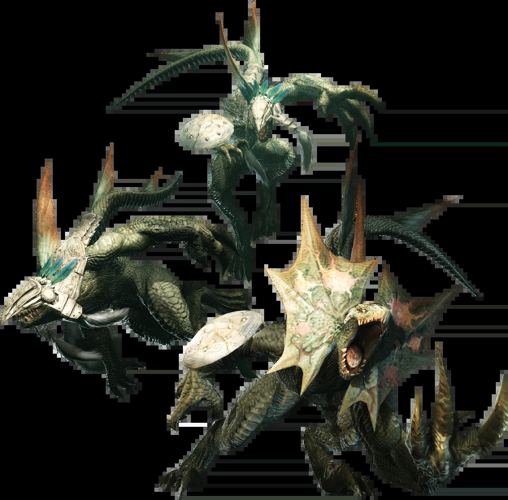
Блейд
О враге
Элитные солдаты армии демонов созданные Мундусом для вторжения в мир людей, представляют собой ящероподобных гуманоидных существ с хвостом растущим из спины.
Механика сражения
Режим Devil Trigger: В состоянии DT Данте получает свойство Guard Break. Любой ваш удар мечом или перчатками будет пробивать щиты Блейдов, не давая им блокировать атаки. На высокой сложности (DMD) это самый безопасный способ зачистки групп.
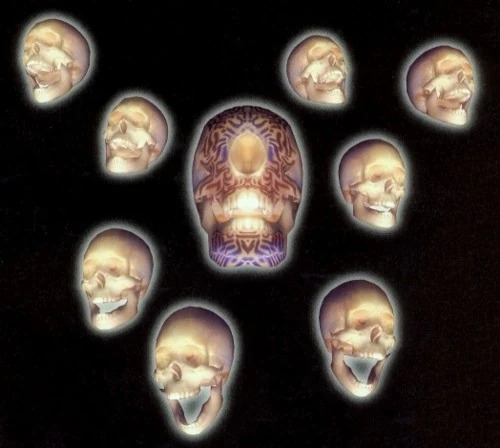
Саргассо
О враге
демоны в виде парящих черепов. В Devil May Cry это обычные враги, впервые появляющиеся в Миссии 3: Уничтожитель жара. В Devil May Cry 2 они встречаются в Миссии 12 при игре за Данте и в Миссии 7 за Люсию.
Механика сражения
Сами по себе они представляют собой парящие демонические черепа, которые не двигаются с места, пока игрок не спровоцирует их или не подойдет слишком близко.
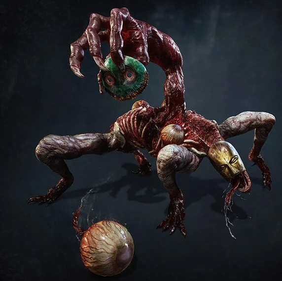
Никто
О враге
Демоны представляющие собой больших гуманоидных существ не имеющие имён, вместо ступней на ногах у них кисти, а из спины растет гротескная дополнительная рука.
Механика сражения
Никогда не стойте на месте рядом с ними, используйте боковые перекаты (Roll), так как обычные прыжки вверх в первой части имеют слабые кадры неуязвимости. Используйте рывок Stinger (меч Аластор) или прием Kick 13 (рукавицы Ифрит). Подбегайте сбоку или сзади, делайте одиночный рывок, отходите и повторяйте снова.
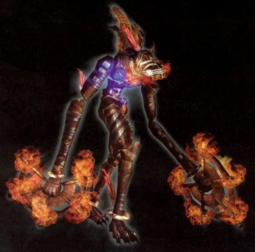
Фетиш
О враге
Является врагом в Devil May Cry, похожем на марионетку, но марионетка, в которой он обитает, была создана демонами, то есть она сильнее, быстрее и умнее марионетки. Их можно встретить на всех уровнях сложности, кроме легкого, и гораздо чаще на более высоких уровнях сложности.
Механика сражения
Взрывной атаки фетиша чрезвычайно трудно избежать, потому что фетиш обычно ждет его использования, пока Данте не окажется рядом с ним и не сможет избежать атаки. Если Данте будет слишком далеко от него, он часто будет вращаться как волчок и бросаться на него. Эту атаку крайне сложно избежать, поскольку она обычно поражает Данте до того, как фетиш окажется в зоне досягаемости, чтобы отбить его, и будет следовать за Данте, даже если он подпрыгнет в воздух. Однако фетиш может быть выбит из атаки, если выстрелить из сильного огнестрельного оружия, как Grenadegun или Nightmare-β. Если он вас схватит, пошевелите левым стиком, чтобы освободиться.
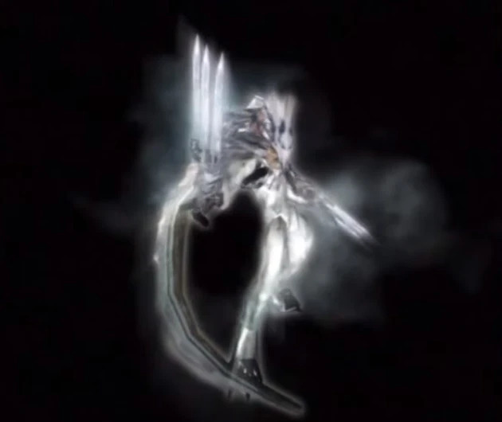
Фрост
О враге
Элитные солдаты армии демонов созданные Мундусом, представляющие собой ящероподобных гуманоидных существ с шиповатыми выступами в районах: головы, спины, плеч и коленей
Механика сражения
Накопив шкалу демонической формы (Devil Trigger), подходите вплотную и используйте способность Inferno — два таких удара гарантированно уничтожают Фроста почти на любой сложности.
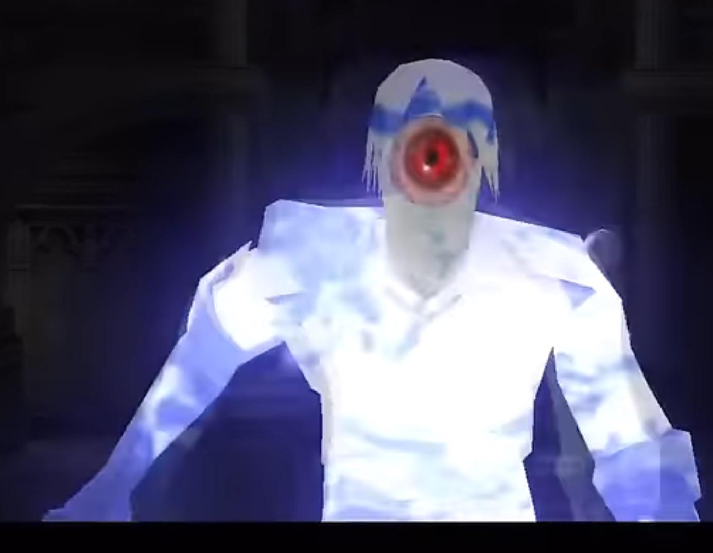
Плазма
О враге
Электрические злые духи в изначальном облике напоминают больших летучих мышей, однако в действительности являются своеобразными концентрированными сгустками электрической энергии, способные изменять свою физическую форму.
Механика сражения
Для эффективного уничтожения врагов типа Плазма на сложном уровне сложности DMD используйте гранатомёт (grenadeturn) в форме летучей мыши или спам способностью Inferno с перчатками Ifrit в наземной форме.
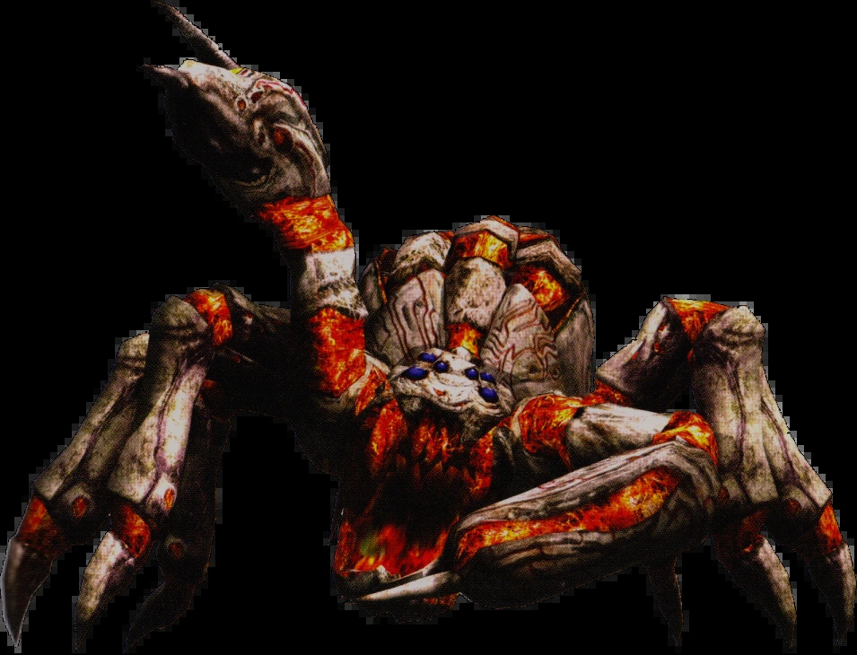
Фантом
О боссе
Гигантский демон являющийся одним из слуг Тёмного Императора. Внешне представляет собой гигантского паука с хвостом скорпиона, который скрыт на спине.
Механика сражения
Сделать один небольшой прыжок ему на лицо (одновременно уклоняясь от его ударов), а затем прыгнуть ему на лицо ПРЯМО ВВЕРХ (без ввода с левого аналогового стика) для второго прыжка для дополнительного урона И стабильности позиции, а затем ударить его сверху. Таким образом, он всегда вздрагивает каждый раз. Просто убедитесь, что не тратите удары впустую, потому что он на самом деле неуязвим в течение короткого времени, пока не оправится от вздрагивания.
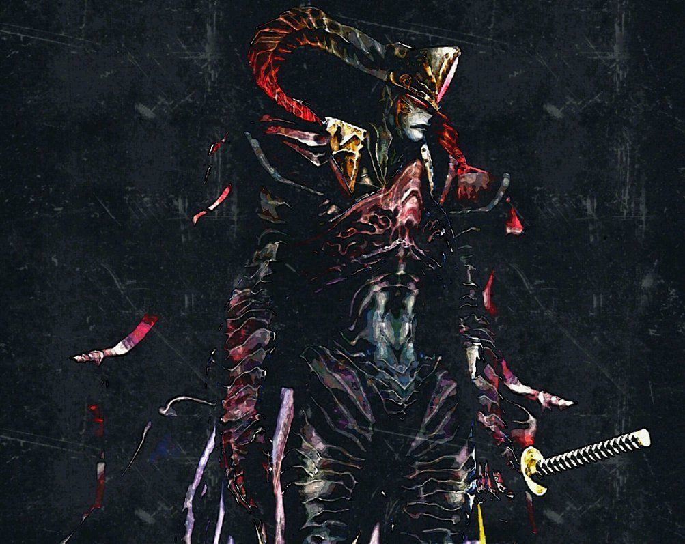
Нело Анджело
О боссе
Это один из главных и самых сильных боссов в игре Devil May Cry 1, под маской которого скрывается Вергилий, родной брат-близнец главного героя Данте.
Механика сражения
Нело Анджело может выдержать до 16 обычных ударов (без эффекта отбрасывания), прежде чем автоматически активирует блок мечом. Когда он заблокировал вашу атаку, вы можете ударить по его мечу еще 2 раза, после чего босс гарантированно проведет одну из 5 мощных контратак (Stinger, High Time, вертикальный или горизонтальный взмах).
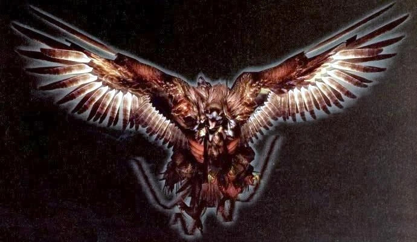
Гриффон
О боссе
Это крупный птицеобразный демон-генерал под управлением Мундуса, с которым Данте сражается трижды по ходу сюжета (в миссиях 9, 12 и 15).
Механика сражения
Победить Гриффона проще всего с помощью дистанционного оружия и контроля дистанции. Этот босс встречается трижды за игру, и против него эффективна одна и та же стратегия. Основной урон Гриффону наносится на расстоянии. Лучше всего подходит гранатомёт или усиленные выстрелы из пистолетов/дробовика. В режиме Дьявольского курка ваши выстрелы автоматически становятся заряженными и наносят огромный урон. Насмешки (Taunt) вблизи босса помогут быстро восстанавливать шкалу DT.
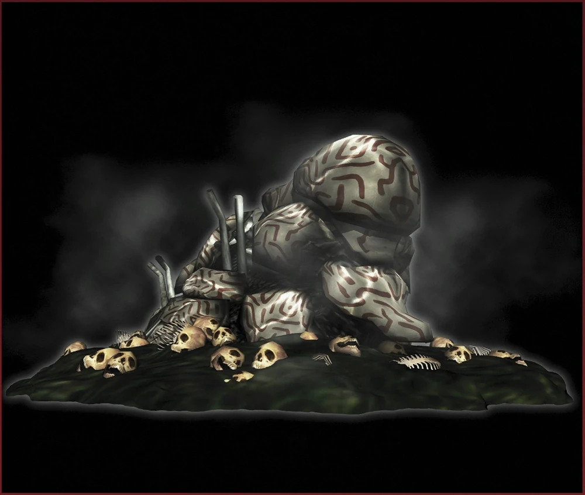
Кошмар
О боссе
биологическое оружие, созданное Мундусом из неорганических веществ. В отличии от прочих генералов, демон подчиняется приказам "Темного Императора" подобно машине, в связи с чем точно неизвестно есть ли у него собственное сознание. Внешний вид и способности Кошмара разнится в зависимости от формы. Схватив противника, Кошмар полностью его обволакивает и переносит в своё внутреннее пространство, в котором находится демоны различного ранга, в случае победы над которыми противник может выбраться обратно, нанеся определенное количество урона Кошмару.
Механика сражения
Кошмар не может быть находиться на поле боя постоянно, потому что его призыв расходует шкалу Devil Trigger, которая постепенно опустошается, пока он активен. Поскольку Кошмар двигается медленно и не может быстро пересечь широкое открытое пространство, будет неразумно призывать его с почти пустой шкалой Devil Trigger, в окружении врагов на обширном поле боя. Кошмар сражается автоматически, но также возможно управлять им напрямую, разблокировав соответствующую способность, тогда V запрыгивает на него и вонзает в него трость.
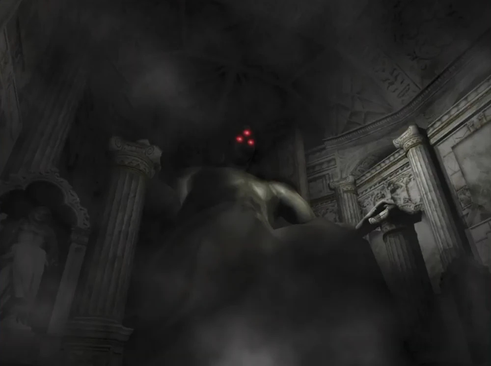
Мундус
О боссе
Мундус, известный также как Князь тьмы, — главный антагонист франшизы Devil May Cry. Он — повелитель демонов, правивший Миром демонов две тысячи лет назад, свергнув предыдущего правителя и угрожая уничтожением Миру людей.
Механика сражения
Во время битвы Мундус затягивает Вергилия в свою оболочку и Данте приходится сражаться против неё одному. В итоге у него получается уничтожить обе металлические руки оболочки Мундуса и, прорвавшись внутрь, рассечь надвое повелителя демонов.

Данте

Триш

Вергилий

Мундус

Спарда
Тень
Марионетка
Ножницы и косы греха
Вельзевул
Киклоп
Блейд
Саргассо
Никто
Фетиш
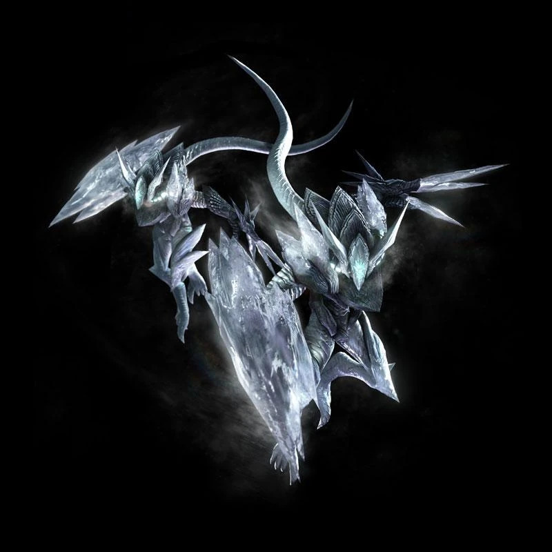
Фрост
Плазма
Фантом
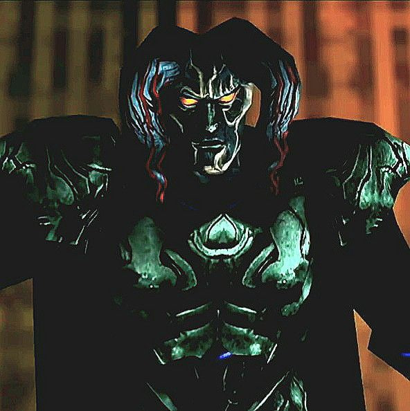